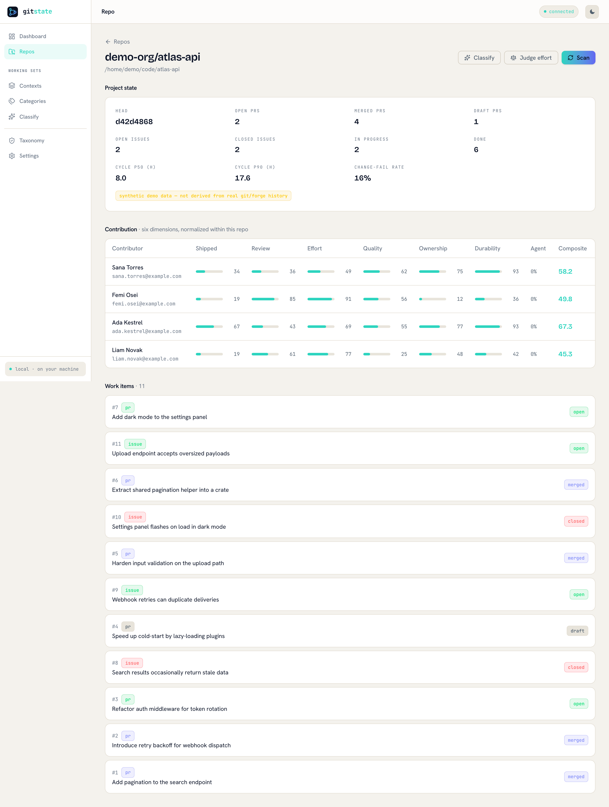
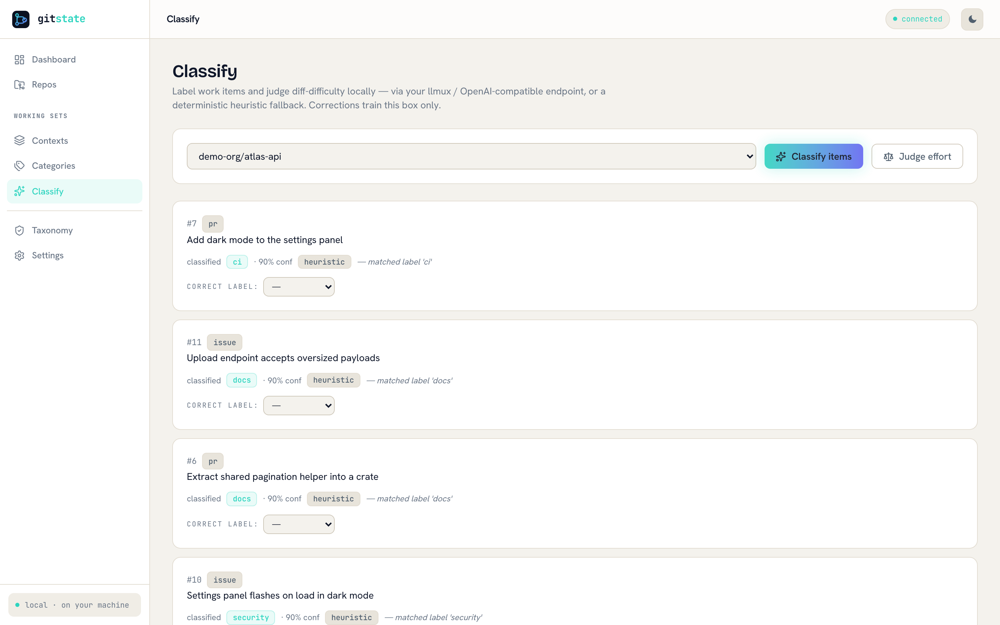
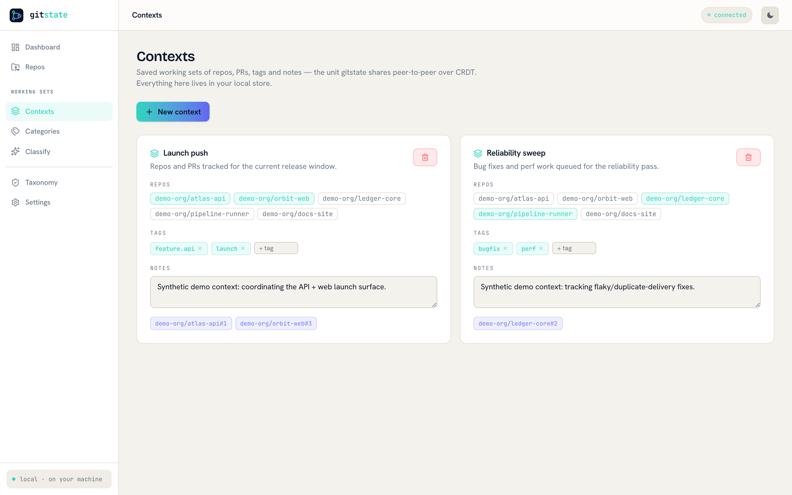
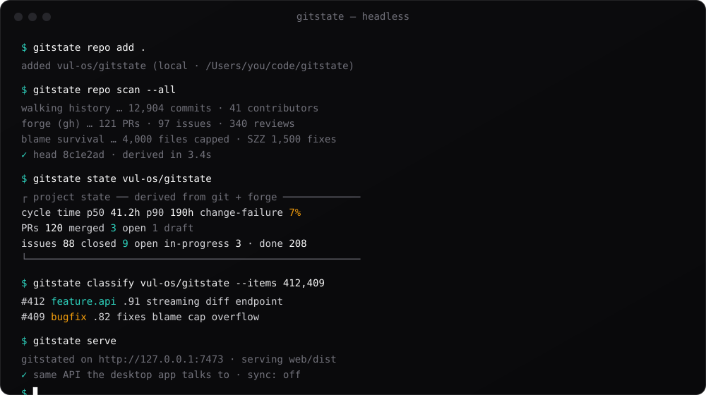

Derive true project state, effort, and contribution directly from your own git & forge — locally.
gitstate is a local-first desktop app. It opens your repositories with a Rust core, reads GitHub and GitLab through the gh and glab CLIs on your own machine, classifies work with a local LLM, and keeps everything in a single SQLite file. There is no multi-tenant server to breach and no ticket to keep up to date — the git history is the ledger. Saved working sets and your category tree sync peer-to-peer, device to device, over CRDT. What you run is what you own.

Shown: the Project state dashboard (representative data). Every screen is in the gallery below.
State you don't have to type
Every tool next to git — Jira, Linear, ZenHub — is a manually-maintained fiction. gitstate stops asking and observes the work instead. The whole thing runs on your machine.
Project state, derived
Open a repo and get DORA cycle time (first-commit → merge), change-failure rate, and in-progress/done counts computed straight from history and your forge — no story-point input is ever the source of truth.
Six-dimension contribution
Shipped, review, effort, quality, ownership, durability — normalized across the repo cohort and shown as texture, so reviewers and mentors are never zeroed and nobody is ranked.
Effort from the diff
A local LLM judges difficulty on a Fibonacci-ish scale — not line count — with a rationale you can read. No LLM configured? A deterministic heuristic gives you the same shape, offline.
Your forge, read locally
PRs, issues, and reviews come through the gh and glab CLIs you already have (or REST with a token). A plain scan of a local repo touches the network exactly zero times.
Signed, shared taxonomy
Labels line up across peers because the category tree ships as an ed25519-signed, versioned, content-addressed data file — not a service. Bad signature ⇒ it fails closed to your local categories.
Contexts, shared P2P
A context is a saved working set — repos, PRs, tags, notes. Keep it private, or sync it and your category edits peer-to-peer over CRDT: last-writer-wins scalars, add-wins sets, no central server to converge through.
Six dimensions, gaming-resistant
Contribution is a shape, not a number. Each dimension has its own git-grounded evidence — a high score on one never buys a high score on another.
Quality inverts SZZ-linked bug introductions and reverts; durability comes from git blame survival. Agent and human commits are counted separately and shown as a share, never blended into one figure.
Every surface
The desktop shell and the headless daemon serve the same React UI over the same JSON API — what you see here is what a gitstate serve renders too.



gitstate serve is an always-on peer for servers and scripts — the same API, no UI required.Quick start
One Cargo workspace. The desktop app and the CLI come from the same build — no Docker, no database server, no external service.
git clone https://github.com/vul-os/gitstate cd gitstate # register a repo and derive its state cargo run -p gitstate-cli -- repo add . cargo run -p gitstate-cli -- repo scan --all cargo run -p gitstate-cli -- state vul-os/gitstate # or run the always-on peer (serves the web UI too) cargo run -p gitstate-cli -- serve # http://127.0.0.1:7473 # or launch the desktop app cd apps/desktop && npm install && npm run tauri dev
- 1BuildA Rust toolchain, plus Node for the desktop shell. One workspace; a bare
cargo buildnever touches the P2P crate. - 2Add & scanPoint it at a worktree. It walks history with git2 and — unless you pass
--no-forge— pulls PRs, issues, and reviews throughgh/glab. Everything lands in one SQLite file. - 3Read the truthProject state, six-dimension contribution, effort, and classification — in the desktop app, from the CLI, or over the JSON API of the headless daemon.
Want classification and effort judging? Point VULOS_LLMUX_URL or OPENAI_BASE_URL at any OpenAI-compatible endpoint — your own llmux, or a local model. Leave it unset and the deterministic heuristic takes over. See the configuration docs.
Local-first by design
The old gitstate was a multi-tenant SaaS: a Postgres honeypot holding every team's git activity behind a login. This one removes the honeypot — there is no server side to breach, subpoena, or shut down.
No central server
No hosted service, no org accounts, no billing cloud, no telemetry. Network egress goes only to endpoints you configured — your forge, your LLM. A local-repo scan makes no requests at all.
Signed data, not a service
Cross-peer label alignment ships as an ed25519-signed, content-addressed taxonomy file, verified against a pinned key and failing closed. Your corrections train your local classifier and stay on your disk.
Peer-to-peer, not pooled
Contexts and categories converge as CRDT ops — LWW scalars, OR-Set members, tombstones for deletes — merged device to device. Cross-population features that would need a view of strangers are deliberately not built.
Part of VulOS
VulOS is a family of open, self-hostable apps. gitstate is fully standalone — it never requires VulOS infrastructure — and when siblings like Ofisi or slip/scan are around, it shares contexts with them peer-to-peer, device to device. No hub, no account, no coupling.
Explore VulOS →